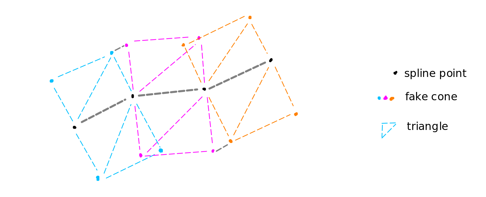

State Estimation Overview
The state estimator takes in twist and spline information through ROS messages, estimating:
the current inertial state of the vehicle (by using our model to project from stale data)
a lookup table from inertial state to curvilinear state based on the spline and OpenGL magic.
Then it syncs these to the GPU for the MPPI controller to use.
State Projection
Motivation
Our track testings revealed that there was a non-trivial amount of latency both upstream and downstream. Upstream being the time between the LIDAR obtaining point clouds and the spline being received by the controller. Downstream being the time between the controller sending a control action to the car and the car’s actuators taking action.
This latency is a problem because the controller is trying to predict the car’s future state based on the current state, so if the current state is stale, the prediction will be inaccurate. This is especially problematic when the car is driving at high speeds, as the car can travel a significant distance during the latency period.
To address this, we implemented a state projection algorithm that uses the car’s dynamics model to project the car’s state forward.
Algorithm
In our current implementation, every spline represents a new inertial coordinate frame, where the origin is the position of the car.
We constantly record the following inside a self-sorting array: * the car’s inertial speed (calculated by taking the norm of twist’s x and y components) * the car’s taken control actions (generated by mppi) * the car’s inertial pose (a pose of (0,0,0) for every new spline)
together with their time stamps (used for sorting). Control actions are recorded approx_propagation_delay into the future to simulate
when the actuation occurs.
Since these records come in asynchronously, often not in chronological order, we store every record and constantly discard the records before the most recent spline/pose, retaining only the most recent action and speed.
To project to the current time, we: 1. Find the most recent pose 2. Project to the next record using the most recent speed and action, together with the car’s dynamics model 3. Update either the most recent speed or action depending if the next record is a speed or action record. Repeat until we reach the current time.
We do this all on the CPU, copying over only the current projected state to the GPU for the controller to use.
Curvilinear Lookup Table Generation
Motivation
Doing state rollouts in curvilinear frame is not robust to noise in spline because it requires smooth curvature. Instead, we do state rollouts in inertial frame, then convert to curvilinear frame (how far from/along the spline). Iterative Closest Points (ICP) is very slow and is hard to do on the GPU because it has of a lot of branching instructions. Thus, we create a giant lookup table that maps from inertial state to curvilinear state. This mapping is straightforward for some points, so the task becomes interpolating this mapping to the rest of the relevant state space. The main sacrifice is that when we are far from the track, we have no data, but that is alright because we don’t care about that region.
Linear interpolation is very similar to how computer graphics are rendered given a series of vertices (points). Since our car has an onboard GPU, we can exploit the rasterization cores to do this interpolation, hardware accelerated. While CUDA has access to texture memory, OpenGL can create textures very quickly. After all, that is what it was designed to do.
Graphics Terminology
Vertex: A point with some known color information, vertex of the rendering triangles
Texture: A generalized image - mapping from 2D coordinates to RGBA/normal vector/custom information
Pixel: A point, usually interpolated from the vertices
Shader: A small program that runs on the GPU for every vertex/pixel.
Render: Calculations done by the pipeline, either through interpolation or a shader program.
Screen: A texture in OpenGL, usually the end goal, but it doesn’t have to be. We interpret the screen as our lookup table.
Algorithm
Given a sequence of (x, y) spline points from path planning,

The colors here are for illustrative purposes only. The actual colors are calculated as described below.
Create “fake boundary points” around the spline based on a predetermined track width. This track width is a large overestimate, so that we can still get meaningful cost data from trajectories that go out-of-bounds. These fake points together with the spline points are our vertices. Assign them a color using: R = distance along spline G = distance from spline B = yaw relative to spline (UNSUED) A = 1 everywhere in bounds, -1 out of bounds (fake bounds) For example, (0,0,0,1) is the color of a spline point, (0,``track_width``,0,1) is the color of a fake boundary point.
Draw triangles between cones. Interpolate the color of the pixels in the triangles.
Within overlapping regions (red), we have conflicting curvilinear values. We treat information that is closer to the spline as more accurate. Thus, we can abuse depth testing, which is the graphics pipeline’s way of occluding (hiding) points that are behind other points. This is also hardware accelerated using the “depth buffer”. Besides x, y, and color, each vertex also initially gets a depth equal to the distance from the spline. This helps to break ties automatically.
Finally, we create a CUDA texture object to point to the rendered lookup table sitting in texture memory. This texture object is then synced to CUDA global memory, which is used by the controller to look up curvilinear state during cost calculation.
Implementation
The controller node owns an outward facing state::stateEstimator, which has callbacks on_spline() and on_twist()
in response to ROS messages, record_control_action() to record control actions taken, and sync_to_device() to
execute the above 2 algorithms and sync the results to the GPU for MPPI. This is defined in controls/src/state/state_estimator.hpp.
This however, is only an abstract base class. The actual implementation is in the derived class, StateEstimator_Impl which is
defined in controls/src/state/state_estimator.cuh.
Note
Why 2 classes?
StateEstimator_Impl needs to create a CUDA texture object and copy information to CUDA global memory, so the class must be defined in a .cuh file with code in the corresponding .cu file. However, ROS is CPU-bound, so it can only interface with CPU-only classes in .hpp files. Thus, StateEstimator is an abstract base class that provides member functions for the controller node to call, but in reality is an instance of StateEstimator_Impl.
StateEstimator_Impl owns a StateProjector defined in the same file, which maintains a multiset of records
in m_history_since_pose and a member function project() that executes the algorithm above.
The lookup table is generated directly in the sync_to_device() member function of StateEstimator_Impl.
All code is in controls/src/state/state_estimator.cu.